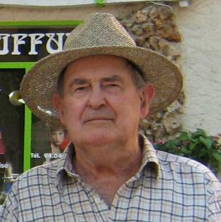

Thermo Kennel
IDEA
 “Good things take time” according to those in the south and the idea for 80 year old Tony Prentice’s Thermo Kennel first occurred to him in 2003. Tony, a retired Canterbury sheep farmer, had seen dogs housed in some pretty miserable conditions during his high country days and he knew there had to be better ways to look after valuable working dogs.